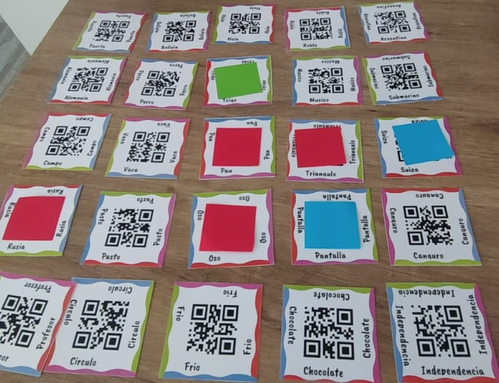
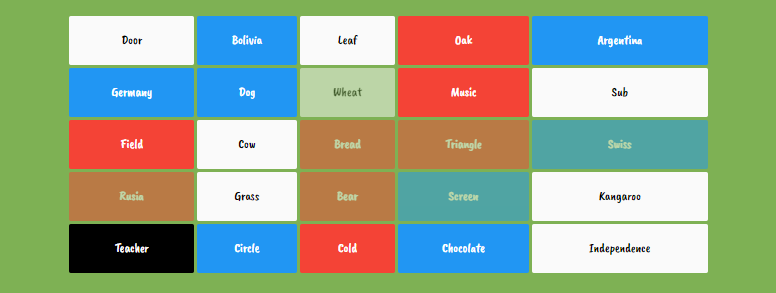
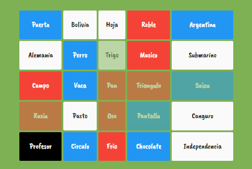

Instructions Instrucciones
Players Jugadores
The game requires at least 4 players, which will be divided in 2 teams.
For each round the team will have one captain, while the rest of the members will be crewmates.
El juego requiere de al menos 4 jugadores, los cuales se dividirán en 2 equipos.
Para cada ronda se escogerá un capitán, y el resto serán tripulantes.
Board Tablero
The board has 25 words. From those:
- 8 correspond to the blue team.
- 8 correspond to the red team.
- 1 is a blacklist word
- 8 are neutral.
El tablero tiene 25 palabras, de las cuales...
- 8 corresponden al equipo azul.
- 8 corresponden al equipo rojo.
- 1 está prohibida.
- 8 son neutrales.
There are 2 boards. Hay dos tableros...
- Cremate's board: Is the paper one, placed on the table, visible to all the players. 
- Captains's board: Is the one on this web, and shows which words belong to which team. Only the captains will use this board. 
- Tablero del tripulante: Es el que está impreso, puesto sobre la mesa, visible para todos los jugadores.
- Tablero del capitan: Es el que está en esta app, y que muestra que palabras corresponden a cada equipo. Solo los capitanes pueden ver este tablero. 
Objective Objetivo
The objective for each team is to guess all of the words that belong to their corresponding color.
When a team gueses all their words, the other team will add 1 point for every word they did not guess.
If a team says the black word, they will add 1 point for every word they did not guess, while the other team doesn't add any points.
The less points a team has, the better.
El objetivo para cada equipo es adivinar todas las palabras que corresponden a su color.
Cuando un equipo adivina todas sus palabras, el otro debera añadirse 1 punto por cada palabra que no lograron a adivinar.
Si un equipo dice la palabra prohibida se termina la ronda y solo ellos se añaden 1 punto por cada palabra que no lograron adivinar.
Cuantos menos puntos tiene un equipo, mejor.
Gameplay El juego
Each time a new board is generated, a new captain is elected for each team.
The captain is in charge of picking a word that helps the team guess the most amount of words of their color, while trying to avoid their team saying words that belong any words that don't belong to their color. Besides saying a word, he needs to say the amount of words he believe can be associated with that word.
For example, in the board above, the captain could say "Countries 2"
The crewmates can guess the amount of words their captain indicates (in this case 2). If the crewmates pick a word that doesn't belong to their team, the color of the word is counted as "guessed", no matter the color, and their turn is over. If they guessed the black word, the whole round is over and the score should be calculated. A captain can say "Countries infinite", if he wants his team to guess as many amount of words as they can.
Cada vez que se genera un nuevo tablero se eligirá un nuevo capitan.
El capitán está a cargo de elegir una palabra que ayde a su equipo a adivinar la mayor cantidad de palabras de su color, pero evitando que sus tripulantes elijan una palabra que corresponde al color enemigo o negro. Además de decir 1 palabra, deberá decir la cantidad de palabras del tablero que se asocian con ella.
Por ejemplo, en el tablero que se muestra arriba un capitán podría decir "Países 2"
Los tripulantes solo pueden adivinar tantas palabras como indica el capitán (en este caso 2). Si los tripulantes eligen una palabra que no pertenese a su color, se termina el turno, no importa que color y se marcan todas las palabras adivinadas. Si los tripulantes eligen la palabra prohibida se acaba la ronda, se cuentan los puntos y se pasa a un nuevo tablero. Un capitán puede decir "Infinito" en vez de un número, si quisiera dejar que su equipo adiviné todas las palabras que quieran.